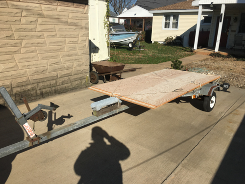
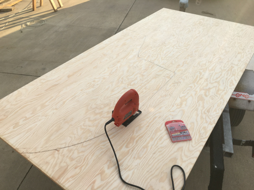
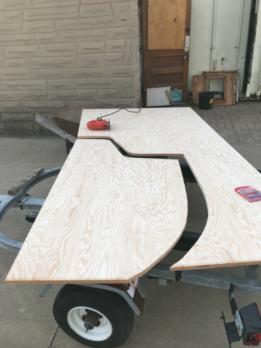
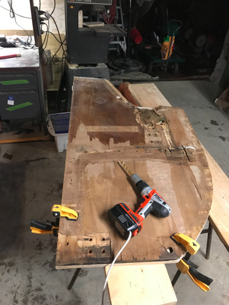
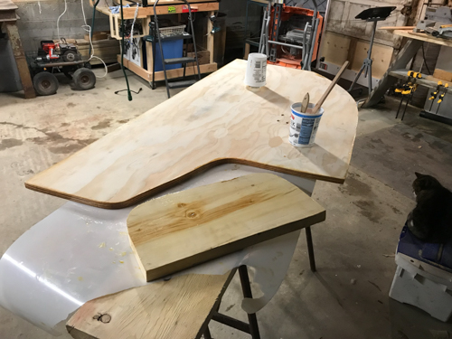
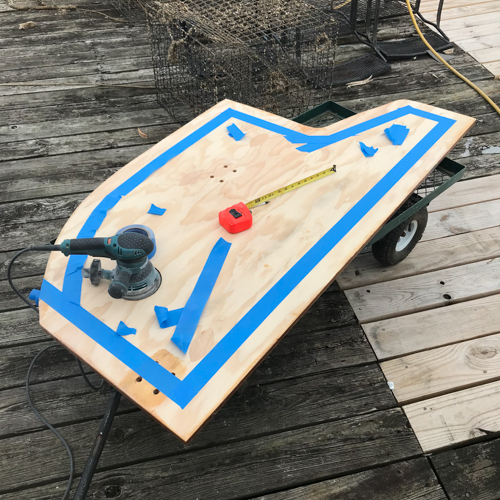

Once I decided to replace the bulkhead, I had a few decisions to make.
- What type of plywood?
- How to bond the plywood to the hull?
- How to treat the plywood to make it last as long as possible
I used a few resources to answer these questions.
First, I read this article:
https://www.woodenboat.com/marine-plywood
I decided that marine-grade fir was the best choice, balancing cost and quality. In terms of strength, it is quite sufficient. The only drawback is that it is not suitable for fine finishing. This is fine, as the bulkheads in my boat have either a formica or teak veneer, so the surface of the bulkhead is never visible. Besides, my plan was to paint the bulkhead (and most interior surfaces) white as part of making the interior look more open.
To bond the plywood to the hull I selected a 6" fiberglass bi-axial tape, along with West System epoxy and fast hardener.
To preserve the plywood, I sealed the edges of the plywood with epoxy, sanded them smooth, and then sealed again. This should ensure no water penetration.
New plywood on the laser trailer!
Cutting the bulkhead
The new bulkhead
The old bulkhead as the template
Sealing the edges with epoxy
Sanding and marking the edges
After some more sanding to make sure the previous tabs were ground as close to the hull as possible, I brought the bulkhead aboard for a dry fit. I had to make a minor adjustment at the upper edge where the previous bulkhead (my template) had been rotten and after that it fit well.
It was a warm day for winter in Maryland so I was able to set up my epoxy station outside which helped with ventilation. I laid in the first set of tabs and am very pleased with the result!

Prepped and ready

Dry Fit

Closeup of steel backing plate

Epoxy station

Tabbing on aft face

Tabbing on forward face

Aft face of bulkhead

Forward face of bulkhead
Next, I'll finish glassing in tabs and then begin work to install new deck core.